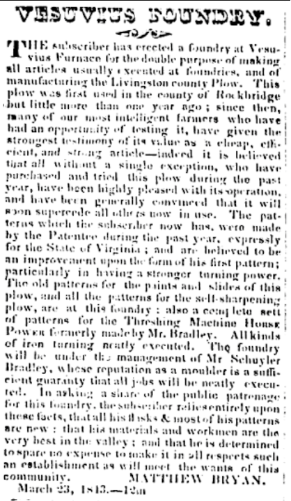
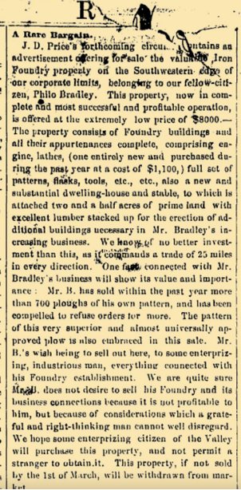
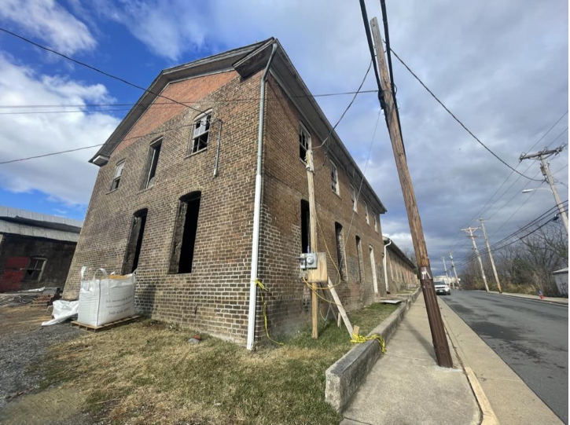
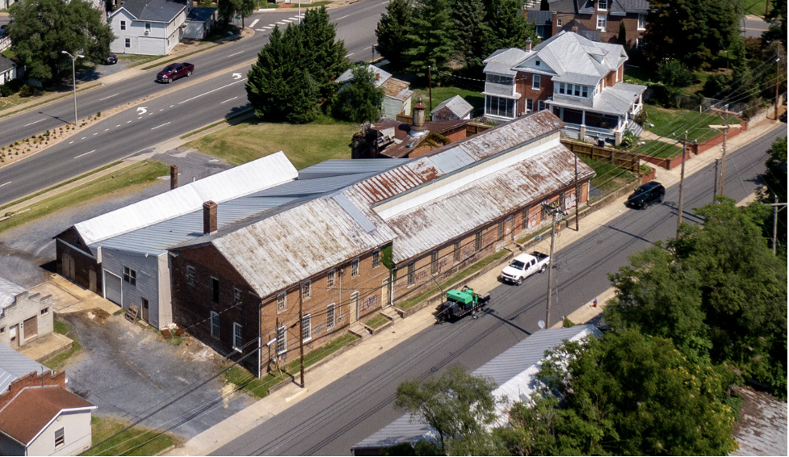
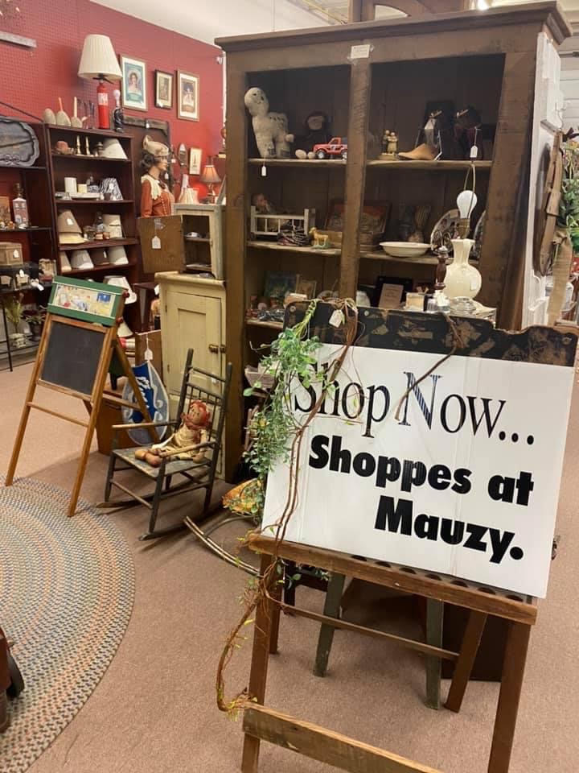
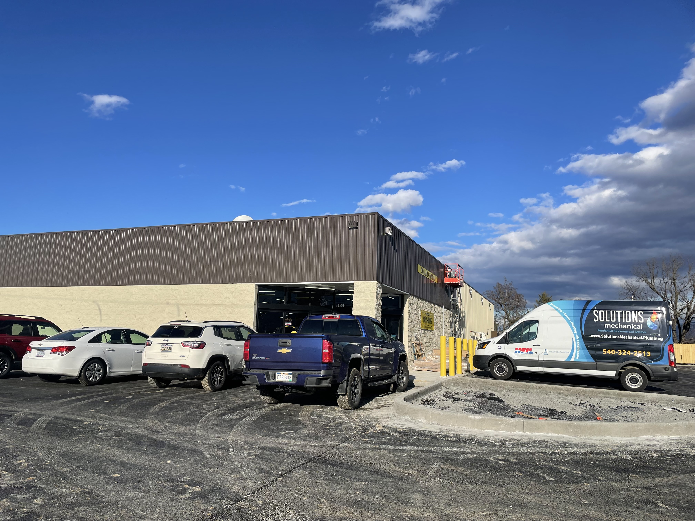

Harrisonburg has seen a few historical buildings, once privately owned, sold to public entities who have demolished the once-praised structures. The P. Bradley & Sons foundry and the Shoppes at Mauzy are two locations that have created stir among concerned citizens and historians for their recent destructions and future construction plans.
Once functional buildings, dating as far back as the 1800s, were originally successful businesses or homes to locals and travelers. Now, they’re being sold to commercial businesses or sitting neglected.
Section 11 of this 1924 map of Harrisonburg shows P. Bradley and Sons foundry located on S. High Street and Warm Spring Turnpike.
Smashed windows and graffiti litter the old brick exterior of the once lucrative P. Bradley and Sons foundry. WHSV reports that while founded in 1856 as a slave-run distillery, it transformed over the years, serving in the 1800s as a booming steelwork business, and currently taking over farm equipment production.
Located on and facing South High Street, the foundry is backed by Blacks Run, a heavily polluted stream and pre-1840s slave meeting place for activities such as church services. At the time, David Steele Young and Abraham Williams co-owned the building, and allowed for their slaves to use it as a distillery. However, last documented in the 1840s, white citizens in the area eventually took over the business.
Unbeknownst to these citizens, the tannery just downstream was releasing mercury into the water, tainting the source for their business and making it unusable. In comes a man from New York named Philo Bradley whose brother, Schuyler Bradley, already owned Visuvius Foundry located south of Staunton. Schuyler saw how profitable his business was and Young and Williams signed the foundry over to brothers Philo and Nelson Bradley
The Bradley brothers came from a long line of steelworkers and were expected to continue the tradition. At the time, “business in those days was almost like a mafia,” Evan Knappenberger, a local historian said. The location on South High was perfect because water from Blacks Run was not able to be used for human consumption. Philo took the lead over the business and began producing a tool called a Livingston Plow. This plow made farmers a fortune and started a very lucrative business.
Then, the Civil War shook up business. While Philo was from the North, it is speculated that the foundry might have been used for producing cannon balls and bayonets for the South during the war. Yet, that wasn’t enough to keep it open. At the end of the war, Philo had to close the foundry due to the new laws passed by Congress allowing northern and foreign businesses to take tons of materials from the South, like lumber and coal.
“Because the South politically disenfranchised itself, it didn’t have equal representation in Congress,” Knappenberger said. “So, the Philo Bradley’s of the world didn’t have a political voice.”
Around 1866, once Philo was done rebuilding, he was looking to sell due to the expense of construction and new steelwork competition from the Pittsburgh Steel Company trying to settle in Harrisonburg. The image below is the offer he created, sitting at $8,000, which was very cheap for the time. Instead he only traded a share of the rebuild for the labor of a Canadian named Joshua Wilton.
Joshua Wilton, whose house is still standing in Harrisonburg today, was recruited from a business school in Ontario. He was a skilled artisan and owned part of the business until the 1870s, as Philo’s children were old enough to join the family business.
Today, P. Bradley and Sons has transformed into a local farm equipment store as the need for these products increased over the years. The company has moved locations to John Wayland Highway and the original building is now surrounded by cans of alcohol, caution tape and broken glass. This run-down structure now serves as a site for Monger Lumber to shred logs for sale.
“In Europe, power of eminent domain is used to protect landscapes and historic structures and we use these much more loosely. Individual property owners can do whatever they want,” Dr. Margaret Mulrooney, history professor at JMU said. Harrisonburg does not enforce strict preservation policies as other cities, like Old Towne, Alexandria, Virginia, does. This leads to historic buildings, such as the foundry, being bought up and destroyed by public entities.
The foundry is part of the Harrisonburg Downtown Historic District, however that will not prevent the building from being torn down. According to Knappenberger, the National Historic Landmark is an alternate way of designating historic buildings, however it has more restrictions, actually preventing buildings from easily being torn down. Despite the lack of security from the Downtown Historic District, “adding it [the foundry] to the historic district shows their intention to preserve it,” Knappenberger said.
Historian Dr. Philip Herrington said, “based on appearance, scale, materials, and location [historical buildings around Harrisonburg] have a lot of potential for preservation and adaptive reuse.” Currently, there is no solid plan in place for the future of the foundry; it will remain a property used for the lumber industry.
The Shoppes at Mauzy originally served as a general store off of Exit 275 of I-81.
The Shoppes at Mauzy have a long history of providing services to travelers and locals since the 1800s. “The Shoppes were located along what was known as the Great Wagon Road. It was a main vessel of travel between Pennsylvania and North Carolina during the late 1700s,” said Mulrooney, “the road was used by travelers before it was replaced by Interstate 81 in the 1960s.” Despite the building's past and to the community’s disappointment, this structure was demolished around August in 2022 and is under construction to become a Dollar General.
Carolyn Dove Wampler, a Shenandoah Valley resident, once owned and lived in the building. Wampler said her family bought it around 1976 or 1977 from Jacob Mauzy, the original owner of the building.
The building initially functioned as an inn, providing rooms and food for travelers and their livestock, Wampler said. Her husband, Ronald said that beyond the rooms for regular travelers, there were quarters for prisoners and slaves.
When the Doves’ bought the building, they used it as a private residence where a few of the family members lived, as well as a rented-out office space for a real estate agent on the other end. Wampler said that her nephew was born there.
When Wampler’s parents began to consider selling in the 1980s, they understood the building had “a lot of historic value.” Wampler’s mother said that she would “very much like to see someone purchase and preserve it.” This is when Mrs. Crumpacker bought it.
Sylvia Crumpacker was the owner of The Shoppes at Mauzy, the building's most recent usage. Inside the store, which was opened in 1999, Crumpacker sold antiques as well as homemade items.
Karen Stultz Whetzel, a long-time resident of Shenandoah Valley and relative of Wampler, has a long history of visiting The Shoppes at Mauzy.
“I used to love to go there to get gifts and they used to have a Christmas open house and serve refreshments,” Whetzel said.
The Shoppes at Mauzy sat on the market and Crumpacker thought she had sold it once, but it ended up falling through, Whetzel said.
The Daily News Record reports that eventually Crumpacker sold the building to a couple who in turn sold it to Wayne Hughes LLC who planned to turn the building into a Dollar General. In a Facebook comment to the reporter, Crumpacker shared that she was ‘sad,’ and that the new direction for the building is “such a waste.”
Community members, many of whom have taken to Facebook to express their outrage, are disappointed in the demolition of such a beloved historical site and are even further frustrated by the creation of yet another Dollar General location.
“The building was, I would say, it needed a lot of work and all that,” Whetzel said. “To me, it’s just sad when we lose history.”
Ronald said that the building should’ve been put on the historical registry.
“Maybe that could have been preserved, I don’t know how that works,” he said. “We didn’t do it and I guess that the Crumpackers’ didn’t do it, but it would’ve been nice.”
Buildings buried in history take with them years of stories and echoes of the past. What’s left are the impressions they’ve made on community members and records for historians to sift through. As years go by, more historic sites may be lost to demolition and advocates remain vocal about preserving the past.